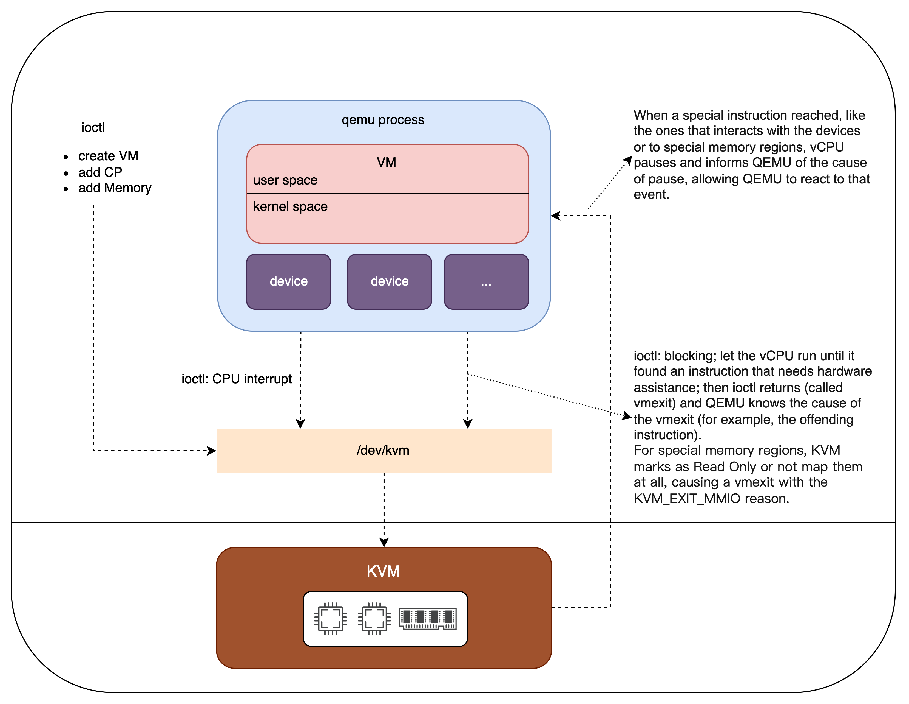

简要说明linux虚拟化套件中的一些术语，特别是qemu, KVM, hypervisor；以及它们的区别与联系。
Qemu和kvm的区别与联系 (1)
最初qemu (Quick Emulator)是一个系统模拟器，它可以在一种architecture的系统上模拟另一种architecture的另一种系统。不但模拟CPU，还模拟各种外设。其中CPU的模拟主要是通过指令翻译的方式，所以速度比较慢。
KVM是后来产生的。
KVM is a full virtualization solution for Linux on x86 hardware containing virtualization extensions (Intel VT or AMD-V). It consists of a loadable kernel module, kvm.ko, that provides the core virtualization infrastructure and a processor specific module, kvm-intel.ko or kvm-amd.ko.
可见，KVM只在Linux系统上，并且只支持特定的CPU。可以查看CPU是否支持KVM:
1 | cat /proc/cpuinfo | egrep "vmx|svm" | uniq |
The presence of the vmx (for Intel) or svm (for AMD) flags indicate that your CPU supports the virtualization extensions.
KVM只靠这两个内核模块也不能创建完整的虚拟机，所以KVM团队就把qemu fork过来，作为用户态的部分，一起实现了虚拟机(qemu模拟系统的其他组件如磁盘等；KVM模拟CPU内存网络)。
后来，fork的分支又merge到qemu主分支中去，就形成现在的局面：
- 从KVM的角度看，它的用户态部分在qemu里；qemu和KVM一起虚拟出完整的guest；
- 从qemu的角度看，它有一个virtualization模式，就是使用KVM（或Xen）来模拟CPU内存网络，实现加速。qemu通过KVM的用户态部分访问KVM的内核态部分。KVM或Xen叫做hypervisor。
另外：qemu-kvm是过时的命令，被qemu-system-x86_64 -enable-kvm取代。
这里有一个操作过程，虽然有点老，但可以看出qemu的使用方式。
https://subscription.packtpub.com/book/virtualization_and_cloud/9781788294676/1

Qemu的3种模式 (2)
Full-system emulation (2.1)
Qemu emulates a full system, including one or several processors and various peripherals.
启动方式：
- qemu-system-x86_64
- qemu-system-i386
- qemu-system-aarch64
- qemu-system-ppc
- qemu-system-arm
- …
User-mode emulation (2.2)
Qemu is able to invoke a Linux executable compiled for a (potentially) different architecture by leveraging the host system resources。例如在x86_64的系统上运行为PowerPC编译的binaray。
Virtualization (2.3)
Similar with “full-system emulation”, but if the target architecture matches the host CPU, this mode may still benefit from a significant speedup by using a hypervisor like KVM or Xen。有的地方也把它归到”Full-system emulation”模式里，也叫做：full system emulation with the hardware acceleration support provided by hypervisors like KVM and Xen.
启动方式：
- qemu-system-x86_64 -enable-kvm (-enable-kvm等价于-accel kvm)
KVM需要：1. host操作系统是Linux；2. host的processor是x86_64（Intel-VT或者AMD-V）。使用Virtualization模式要求guest和host的architecture相同。也就是说，使用qemu+kvm的方式的话，host必须是”Linux on x86_64 (Intel-VT or AMD-V)”，guest必须是x86_64的VM，可以是x86_64的Linux，也可以是x86_64的Windows。
Hypervisor (3)
Hypervisor was originally called a virtual machine monitor or VMM. The physical hardware that a hypervisor runs on is typically referred to as a host machine, whereas the VMs the hypervisor creates and supports are collectively called guest machines. A hypervisor enables the host hardware to operate multiple VMs independent of each other and share abstracted resources among those VMs.
There are two types of hypervisors: Type 1 and Type 2 hypervisors. Both hypervisor varieties can virtualize common elements such as CPU, memory and networking, but based on its location in the stack, the hypervisor virtualizes these elements differently. The main difference between Type 1 vs. Type 2 hypervisors is that Type 1 runs on bare metal and Type 2 runs on top of an operating system.
Type 1 hypervisors: A Type 1 hypervisor runs directly on the host machine’s physical hardware, and it’s referred to as a bare-metal hypervisor. The Type 1 hypervisor doesn’t have to load an underlying OS. With direct access to the underlying hardware and no other software – such as OSes and device drivers – to contend with for virtualization, Type 1 hypervisors are regarded as the most efficient and best-performing hypervisors available for enterprise computing. Examples:
- ESXi hypervisor (included in VMware vSphere);
- Microsoft Hyper-V;
- KVM: The KVM hypervisor enables admins to convert a Linux kernel into a hypervisor and has direct access to hardware along with any VMs hosted by the hypervisor. Features include live migration, scheduling and resource control. Every VM is implemented as a regular Linux process, scheduled by the standard Linux scheduler, with dedicated virtual hardware like a network card, graphics adapter, CPU(s), memory, and disks.
- Xen hypervisor;
- Oracle VM;
- Citrix Hypervisor
Type 2 hypervisors: A Type 2 hypervisor is typically installed on top of an existing OS. It is sometimes called a hosted hypervisor because it relies on the host machine’s preexisting OS to manage calls to CPU, memory, storage and network resources. Examples:
- Oracle VM VirtualBox;
- VMware Workstation Pro: on Windows and Linux systems
- VMware Fusion: on Mac;
- Qemu;
Although the purpose and goals of Type 1 and Type 2 hypervisors are identical, the presence of an underlying OS with Type 2 hypervisors introduces unavoidable latency; all of the hypervisor’s activities and the work of every VM has to pass through the host OS. Also, any security flaws or vulnerabilities in the host OS could potentially compromise all of the VMs running above it.
可见，从Hypervisor的分类方式上看，qemu是type 2 hypervisor，KVM是Type 1 hypervisor。但从定义上看，Type 1 hypervisor不需要Operating System，而KVM却需要Linux系统，如何理解呢？我读到一些这样的描述：
- KVM installs natively on all Linux distributions and turns underlying physical servers into hypervisors so that they can host multiple, isolated virtual machines (VMs);
- The KVM hypervisor enables admins to convert a Linux kernel into a hypervisor;
- KVM plugs directly into the kernel’s code and allows it to function as a hypervisor;
- KVM converts Linux into a type-1 (bare-metal) hypervisor. All hypervisors need some operating system-level components—such as a memory manager, process scheduler, input/output (I/O) stack, device drivers, security manager, a network stack, and more—to run VMs. KVM has all these components because it’s part of the Linux kernel.
- KVM is part of Linux. Linux is part of KVM.
KVM把Linux变成了bare-metal hypervisor。或者说，使用KVM生产虚拟机时，KVM变成主体，Linux就变成a part of KVM，KVM通过Linux的能力管理内存、CPU及其它设备。这样KVM（包扩Linux）就像ESXi一样，是一个Type 1 hypervisor（虽然它看起来还像一个普通Linux系统）。所以，这种情况下，不能认为KVM就是两个Linux内核模块，相反，Linux是KVM的一部分。KVM（包括Linux）变成Linux hypervisor。
KVM allows Linux to function as a hypervisor, so a host machine can run multiple isolated virtual environments called guests. KVM basically provides Linux with hypervisor capabilities. This means that the hypervisor components such as memory manager, scheduler, network stack, etc. are provided as part of the Linux kernel. The VMs are regular Linux processes scheduled by a standard Linux scheduler with dedicated virtual hardware such as network adapters.